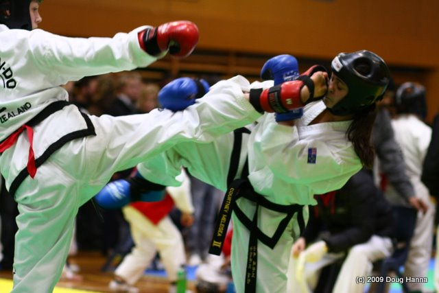

Historically in Ireland, we have had 4 homegrown martial art; Stickfighting (Batairacht), Boxing (Dornálaíocht), Wrestling/Collar-and-Elbow (Coraíocht) and Kicking (Speachóireacht). These have all been recorded as being active sports from somewhere around 1st-2nd Millenia BC up until the 19th and 20th Century where, due to the mass death and emigration from the Famine, that these sports have all but disappeared from being practiced or competed in. Unlike the GAA, which began as a body to represent and promote Gaelic games like Hurling, there was no organisation during its use to represent and promote these martial arts, which ultimately led to their decline and near (or total) extinction today.

While the native arts have – besides a few families – gone extinct, we still have a lot of other martial arts in this country. There’s clubs across the country for styles of Aikido, Kickboxing, Judo, Kung Fu, Kendo, and more. Martial arts in general is very active in the country thanks to the efforts of practitioners in the past bringing these arts to the Island, setting up clubs around the country, and setting up organisations to try promote and regulate the arts in its teaching, coaching and competing.
